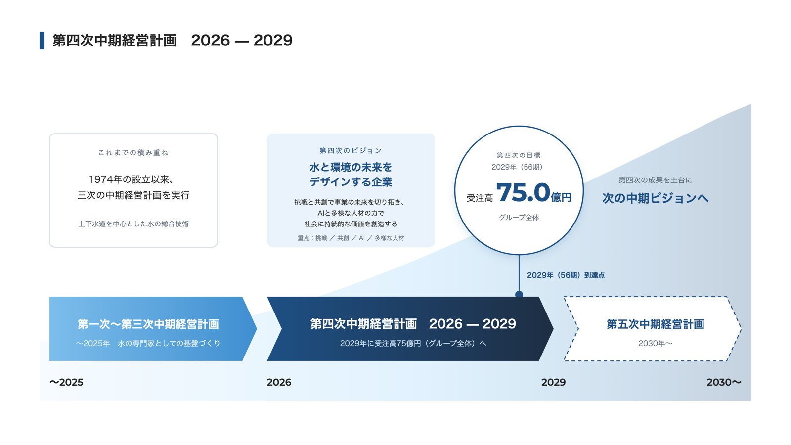
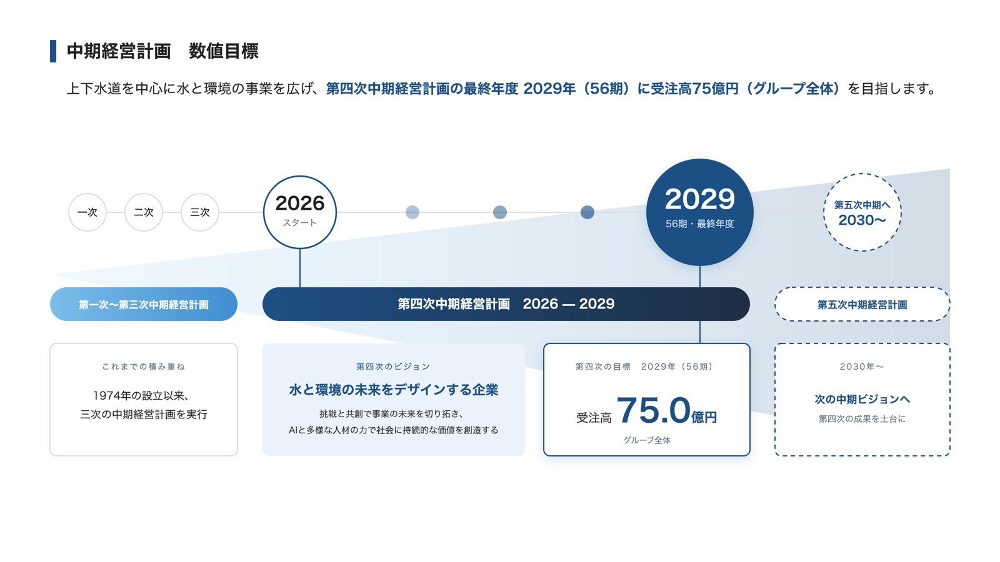
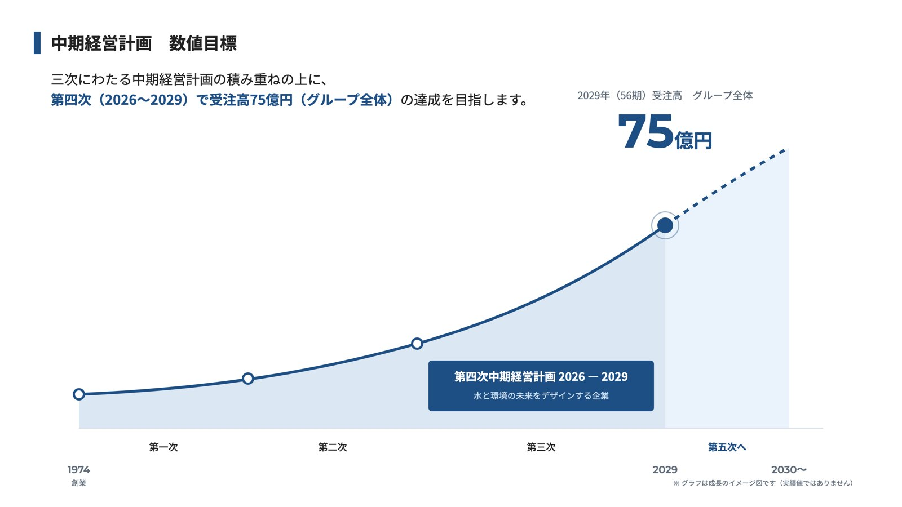

ページタイトル
現状
Sansui Consultants Co., Ltd.（英文社名のみ。当方クロール 2026年9月時点で393ページ中392が同じ形）
修正後
上下水道・水と環境の総合コンサルタント｜株式会社三水コンサルタント
株式会社三水コンサルタント 御中 ｜ 確認用
どこを、どう直したかを1ページにまとめました。各ページは「現状の再現」と「修正後の案」を見比べられます。赤字は、ご確認いただきたいこと・いただきたいものです。
採用サイトは作り直した新しいページです。現行の採用ページと見比べてご確認ください。
最初にお願い（10月中の公開に必要です）
アカウント情報は、メール本文ではなく、パスワード付きのファイルかお電話でお知らせください。
ご確認ください
いただきたいもの
大きな見た目・構成は変えず、文章の追加と並べ替えが中心です。実績紹介とお知らせの間に、山﨑社長からご要望のあったグループ企業の帯を置き、新しく「グループ企業一覧」ページを作りました。
Sansui Consultants Co., Ltd.（英文社名のみ。当方クロール 2026年9月時点で393ページ中392が同じ形）
上下水道・水と環境の総合コンサルタント｜株式会社三水コンサルタント
未設定（Googleが本文から自動抜粋）
1974年創業。上下水道の調査・計画・設計を中心に、廃棄物・河川・ウォーターPPP・海外事業まで手がける水と環境の総合コンサルタント。大阪・東京・仙台・名古屋・福岡に支社、全国53のエリア事務所。
未設定（LINE・Facebook等で共有すると画像なし）
共通OGP画像（紺地・ロゴ・「上下水道・水と環境の総合コンサルタント」1200×630）＋ページ別タイトル
なし
Organization（社名・英文名・URL・ロゴ・設立年・本社住所・電話）を JSON-LD で記述
フッターの画像が初回表示時にすべて読み込まれる
フッター画像5点に遅延読込（loading="lazy"）。見た目の変化なし
大見出し（h1）なし。最初の画面は映像＋理念の文言のみ
最初の画面の直後に、紺の帯の「メッセージ」を新設。h1「上下水道・水と環境の総合コンサルタント」と導入文（1974年の設立以来…調査・計画・設計で支えてきました。／上水道・下水道から、工業用水道・廃棄物・河川・官民連携まで。）を短い行で。右に水の写真を円形で配置
3つの心構えの後、すぐ「会社紹介」ボタン
「About Us 企業理念 3つの心構え」として、中心の円「水と人の豊かなくらしを作る」の周りに3つの心構えを円で配置する図に。その横（スマートフォンでは下）に3つの心構えの直後に橋渡しの一文（既存の本文と同じ見た目）「この3つの心構えのうち「三水」は、そのまま私たちの事業の柱です。くらしを支える上水道・下水道、環境を守る農・漁業集落排水・廃棄物・河川、そして水を活用する再生水・工業用水、官民連携、海外事業と、それらを支える土質調査・施工監理。理念を軸に、事業をご紹介します。」スマートフォンでは1文目と最後の一文だけを表示
トップに数字がない（会社紹介・採用ページに分散）
トップの最後（お知らせの直後）に文字で1列（スマートフォンでは上3つ・下2つの小さな表にまとめる）：創業1974年（昭和49年・創業52年）／社員263名／技術士66名／日経コンストラクション 下水道6位・上水道7位／5支社＋全国53のエリア事務所
グループ会社は会社紹介の末尾に社名・所在地・電話のみ。トップからは見えない
実績紹介とお知らせの間に、写真の上に「三水グループ企業を探す」の帯を追加し、右のボタンから新設の「グループ企業一覧」ページへ。一覧ページは事業フィールド・所在地で絞り込め、グループ会社（恵進コンサル・エスエスシー）の事業内容・所在地・主な業務を同じ型で掲載。社数が増えても1社ずつ足せる
最初の画面の直後から長い文章が続き、読み始める前に離脱しやすい
大見出しを短くし、ABOUT US の導入文の空行をなくし、橋渡しの一文はスマートフォンでは短い版を表示。見出し・余白も詰める（パソコン表示は変更なし）
見出しの下に説明文。スマートフォンでは「もっと見る」が画面幅いっぱいの大きなボタン
説明文を外す。スマートフォンでは見出しの右に小さな「もっと見る」を置き、すぐ一覧が見えるようにする
動画（高さ約300px）の下に濃い青の帯を置き、見出しと文をその帯に表示
動画を画面いっぱいに広げ、見出しと文を動画の上に重ねる（パソコンと同じ見せ方）。右下のスクロールの合図で、続きがあることを伝える。文字が読めるよう下に向かって濃くなる青を重ねる。パソコン表示は変更なし
なし
右下に縦書きの「SCROLL」と、下へ流れる線＋下向き矢印を表示（PC・スマートフォン共通）
「次世代へつなぐ、持続可能な環境づくりを目指して。」が文として途中で切れている。強制改行が文の途中にあり、スマートフォンで不自然に折り返す
T1 と1つにまとめた導入文に差し替え（事業の幅と設立年を加えて1文に。「次の3つの心構えを企業理念としております」の一文は、すぐ下に3つの心構えがあるため外した）。改行はPCのみ。スマートフォンの「ABOUT US」の小見出しを見出しと同じ左寄せに
9分野のボタンが同じ大きさで2列に並ぶ。説明文なし
同じボタンのまま、理念の3軸（くらし＝上水道・下水道／環境＝農・漁業集落排水・廃棄物・河川／活用＝再生水・工業用水等・官民連携・海外・土質・施工管理等）で3つに束ね、軸ごとの一文と各分野の1行説明を添える。パソコンでは左右2段をやめ、見出しの下に3軸を横3列で並べる（スマートフォンでは1行説明を出さず、ボタンだけにして文字量を抑える）
ご確認ください
いただきたいもの
「会社紹介 ｜ Sansui Consultants Co., Ltd.」、説明文なし
「会社紹介（企業情報・拠点・沿革）｜株式会社三水コンサルタント」＋説明文
登録部門・技術士・表彰・ISO・支社電話が中段〜末尾に分散
企業理念・行動指針の直後に「発注者の皆様へ（要点）」を既存の見出しの型で追加。ページ内ナビにもボタン追加
グラフ画像のみ
グラフの下に数値を文字で併記（売上高61億円以上見込・従業員263名→300人以上見込・受注高目標60億円）
電話はタップ不可。担当エリアの記載なし
本社・支社に「担当エリア」「主な業務」を1行ずつ追加。本社・支社・エリア事務所の電話をタップ可能に（既存の地図・折りたたみはそのまま）
令和5年（ISO55001）で止まっている
令和6年 設立50周年／ISO 9001取得／エスエスシー設立／令和8年 恵進コンサルのグループ会社化 を追記（年月は貴社確認）
いただきたいもの
業界の背景説明から始まる
見出しの直後に「三水コンサルタントは〇〇のコンサルタントとして…を手がけています」の1段落を追加。背景説明はその後に
「もっと見る」（実績一覧全体へ）のみ
「この分野の実績をすべて見る」（業種で絞った実績一覧へ）と「お知らせ一覧へ」の2ボタンに。公式サイトにはサイト内検索の結果表示が無いため、分野別のお知らせは第2弾（N2 カテゴリ化）で
「上水道 ｜ Sansui Consultants Co., Ltd.」
「上水道の調査・計画・設計｜株式会社三水コンサルタント」＋説明文（9ページ分は3章）
ご確認ください
カードから事業ページへの導線なし
各カードの末尾に「この分野の事業紹介（業種名）」リンクを表示。あわせて業務名を詳細ページへのリンクに（現状はカードから詳細ページへ移動できない）
業務名と概要のみ
末尾に「この分野の事業紹介」「この分野の採用情報」の2ボタン
6件が本文の代わりに会社紹介（5件）・採用メッセージ（1件）を表示
原因を特定（4章）：該当6件の投稿に会社紹介／採用の「テンプレート」が設定されている。設定を既定に戻す（管理画面または WP-CLI）。確認用ページでは「今治市工業用水道BCP」の正しい表示を再現
39件中33件が「2026.03.15」（一括登録日）を表示
見出しの日付を非表示にし、年度（令和7年度 など）をラベルで表示
一覧カードにしかない
詳細ページの見出し上に 年度・業種・発注者 をラベルで表示（絞り込み一覧へのリンク付き）。タイトル・説明文も型で自動生成
入力欄16＋同意。必須9。住所6欄。技術分野7つが事業9分野と不一致
必須4（会社・団体名／部署・ご担当者名／メール／内容）＋任意2（電話・ご相談の分野＝事業9分野）。住所・職業・担当分野・メール確認は削除。確認画面→完了ページの3段構成（Contact Form 7 多段階）はそのまま
「最寄りの支社にお問い合わせ」とあるが一覧がない
フォームの上に5支社の電話（タップ可）・担当エリアの表を追加
完了ページの表示のみ
受付の自動返信メール（受付・3営業日以内の返答目安）を設定。フォーム下に案内文
性別・年齢を必須で取得。志望動機は入力欄
性別・年齢を削除。志望動機は任意と明記
「こちらからお問い合わせ下さい」がリンクになっていない
採用に関するお問い合わせフォームへのリンクに
ご確認ください
いただきたいもの
「Company」（/company-2/・本文がほぼ空）と「サンプルページ」（/sample-page/）が公開・サイトマップに残る
2ページを非公開（下書き）にし、サイトマップから除外
日本語がそのままURL（長く、共有時に崩れる）
新規投稿から英数字のスラッグに（運用ルールは6章）。過去分はそのまま
いただいた図の文言と数字はそのままに、3案作りました。画像を押すと大きく表示します。



ご確認ください
10月末の掲載にも、採用サイトと同じ WordPress アカウントが必要です。